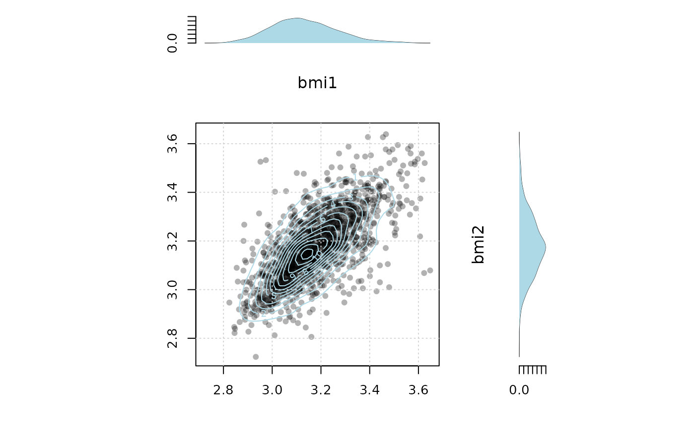
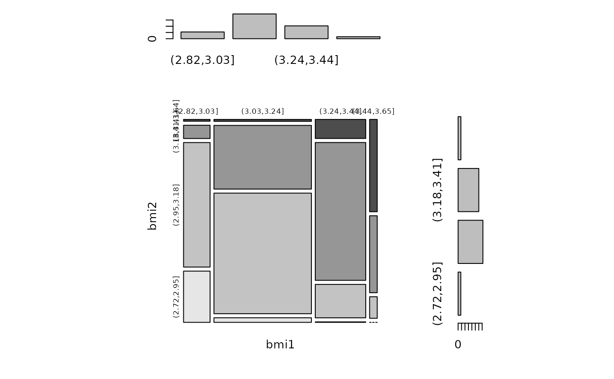
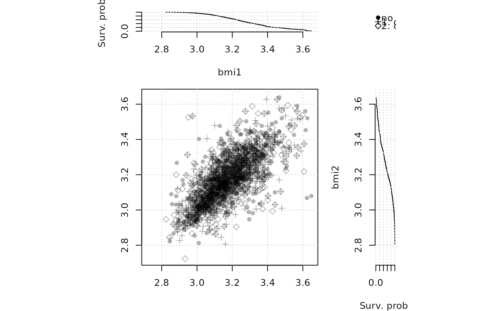

Scatterplot with contours of the (kernel) estimated density
bivariate data to plot (data.frame or matrix with 2 columns)
argumemts to marginal estimator (`density` continuous data, `barplot` for categorical )
arguments to 2d-kernel smoother
x-axis label
y-axis label
color of points
color of contour / density plot
transparency level of points
should grid be added to the plot
If TRUE subplots of the marginal distributions are added to the plot
arguments to lower level plot functions
data("twinbmi", package="mets")
twinwide <- fast.reshape(twinbmi, id="tvparnr",varying=c("bmi"))
datamz <- log(subset(twinwide, zyg=="MZ")[,c("bmi1","bmi2")])
# continuous variables
plot_twin(datamz)

# categorical variables
datamz2 <- datamz
datamz2[, 1] <- cut(datamz[, 1], 4)
datamz2[, 2] <- cut(datamz[, 2], 4)
plot_twin(datamz2, color = TRUE)

# survival variables
cens1 <- rbinom(nrow(datamz), 1, 0.5)
cens2 <- rbinom(nrow(datamz), 1, 0.5)
datamz2[, 1] <- Event(datamz[, 1], cens1)
datamz2[, 2] <- suppressWarnings(Event(datamz[, 2], cens2))
plot_twin(datamz2)

rm(datamz, datamz2, cens1, cens2)